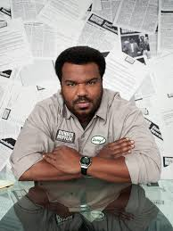
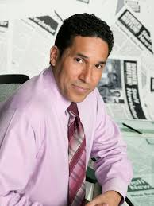
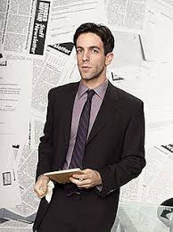
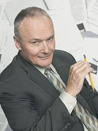

My roommate wants to meet everybody. Because I'm pretty sure he thinks I'm making Dwight up. He is very real.
The only problem is whenever I try to make a taco, I get too excited and crush it.
Wikipedia is the best thing ever. Anyone in the world can write anything they want about any subject. So you know you are getting the best possible information.
I am one of the few people who looks good eating a cupcake
Would I ever leave this company? Look, I’m all about loyalty. In fact, I feel like part of what I’m being paid for here is my loyalty. But if there were somewhere else that valued loyalty more highly… I’m going wherever they value loyalty the most.
I've never been lucky. And I'm not talkin' about the lottery, I'm talkin' about stuff like developing a soy allergy at thirty-five. Who gets a soy allergy at thirty-five? And why is soy in everything?
The weird thing is now I'm exactly where I want to be. I've got my dream job at Cornell, and I'm still just thinking about my old pals. Only now they're the ones I made here. I wish there was a way to know you're in "the good old days", before you've actually left them. Someone should write a song about that.
If you pray enough, you can change yourself into a cat person.
Look, it doesn't take a genius to know that every organization thrives when it has two leaders. Go ahead, name a country that doesn't have two presidents. A boat that sets sail without two captains. Where would Catholicism be without the popes?
Jim's been looking at me kind of a lot all week. I would be creeped out by it, but it is nothing compared to the way Michael looks at me.
There’s nothing better than a beautiful day at the beach filled with sun, surf, and uh, diligent note-taking.
Dispoable cameras are fun,although it does seem wasteful. And you dontever get to see your pictures.
In my experience, guys are way more attracted to the back of you than the front of you.
The only difference between me and a homeless man is this job. I will do whatever it takes to survive... like I did when I was a homeless man.
We should really have the office's air quality tested. We have radon coming from below. We have asbestos in the ceilings. These are silent killers.
I wonder what people like about me....probably my jugs.